ASP.NET MVC
MVC is an architectural pattern that stands for Model View Controller. Designed in 1970s and was widely adopted in web. It is used
by many frameworks like Laravel, RubyOnRails,ASP.NET MVC etc.
Model
Application data and behaviour in terms of its problem domain independent of the UI. In model we have our classes.
These classes have properties and methods that purely represent the application state and rules that have nothing to do with the UI.(Plain CLR objects or POCOs)View
The HTML that we display to the userController
Responsible for handling the HTTP request(for example if our app is hosted in vidly.com and we want to view vidly.com/movies a controller will
be selected to handle this request)
***View <- Controller -> Model*** So the controller is responsible for connecting the Model with the View.Router
This is not mentioned in MVC letters but it's always there. Selecting the right controller is the responsibility of the router. The router
based on some rules knows what controller must be used according to the request. In ASP.NET MVC methods of a controller are called actions
With this architecture every component is responsible for doing something and seperating it for clearer code and maintanability.
ASP.NET MVC structure
App_Data
Database files will be stored hereApp_Start
Includes some classes for when the application is started
Routeconfig.cs
This is the configuration or our routing rules.
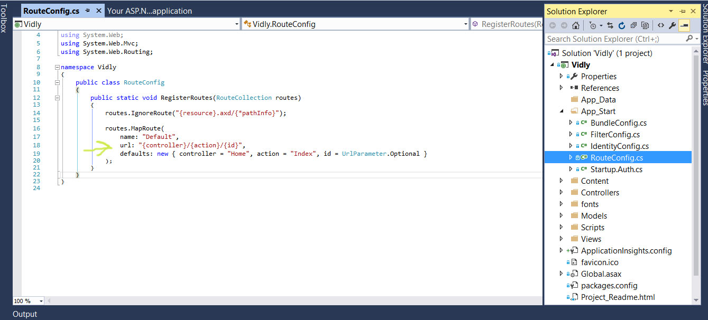
So if our url matches this patterns we have: First part is the name of the controller,second part is the name of the action, third part is an ID
we can pass to that action. With this rule if we send a request to movies/popular in runtime we have a MoviesController and a Popular() method.
Another example is with /movies/edit/1 we get MoviesController and its method Edit(int id) with id 1.
Also we can see we have some defaults values in our picture. So if the request doesn't match the url pattern we will get the defaults.
Similarly if we have the controller but not the action it will be handled by the Index action. If we go to /movies since we don't have any actions
it will be handled by MoviesController.Index().
Id is an optional parameter. Because not every action needs an id.
Bundleconfig.cs
Here we define various bundles for client side assets like scripts css etc.
Content
Here we put our css files, images and every other client assets.
Controllers
The folder with our controllers which in our first created applcation we see 3 default controllers.
fonts
Fonts(we should move them to Content).
Models
All our domain classes are here.
Scripts
Javascript files.
Views
We have our views which is the V in MVC. In there we have folders named after controllers(without the ending controllers) in our application.
By convention when we use a view ASP.NET will look for the same name as the controller.

We also have a folder called Shared which includes the views that can be viewed by different controllers.
favicon.ico
The icon diplayed for our app in browser.
Global.asax
Traditional file that has been in ASP.NET which is a class that provides hooks for various events in the applications lifecycle.
When the application is started Global.asax will start. We will have some things registered like Routes.
packages.config
It's used by Nuget package manager(like npm bower etc). Instead of going to every site downloading and installing a package we have them all in one place
in Visual Studio.
Startup.cs
This the new approach microsft takes for ASP.NET core which will replace Global.asax when the application starts.
Web.config
This is an .xml file which has our configuration for our application. Mostly we use connectionStrings(database connection info) and appSettings(our configuration
settings for our app)
MVC in Action
First we create a class in Model with the properties we want.
Let's say we want to have a page that we randomly pick a movie and render its details. If the page will be /movies/random we need to create a controller
called MoviesController with an action called random. So an action is a method responsible for handling a request.
To create the controller in solution explorer right click in controller and then add controller. There we have some templates that will auto generate
some code for us. Then we create an empty one. By default we have an Index action which returns the View. We have to create what methods/actions we will have.
We have to say to this newlly created controller that we will use the models.
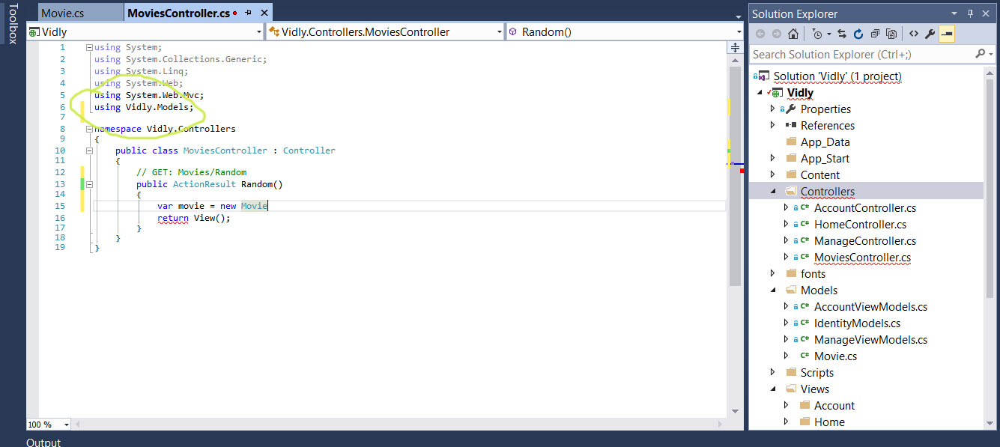
As we see it returns the View which we should create in our folder Movies that will be called Random.
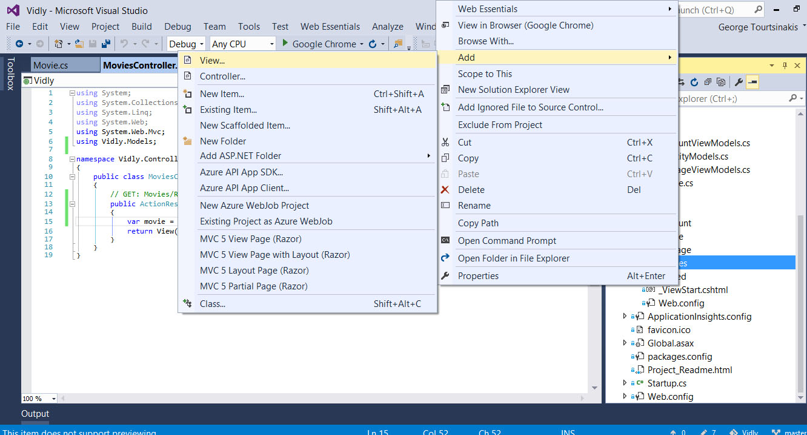
There we can use a template and choose as a partial view which is like a widget which can be used on different views.
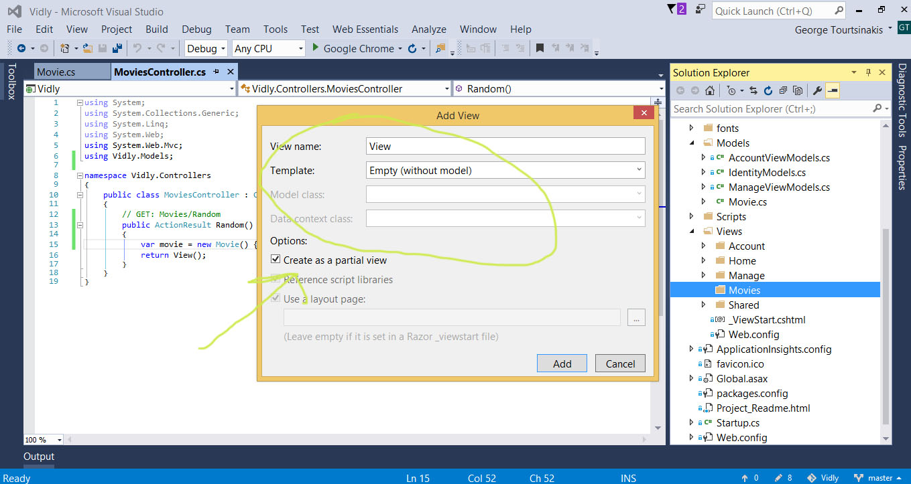
Also we have to select the layout since we want all our pages look similar in our app. By default our mvc project has a layout to choose.
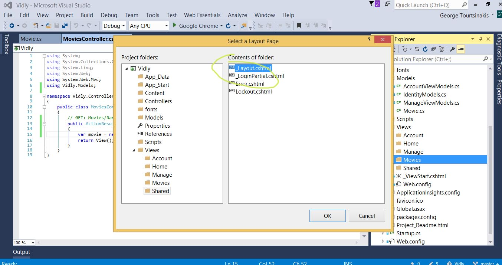
.cshtml(the view we created)
ViewBag.Title
This is basically the title for the page shown in the browser
Layout
The layout used for this view.
Back at our MoviesController we pass the parameter we want to show in our View method.
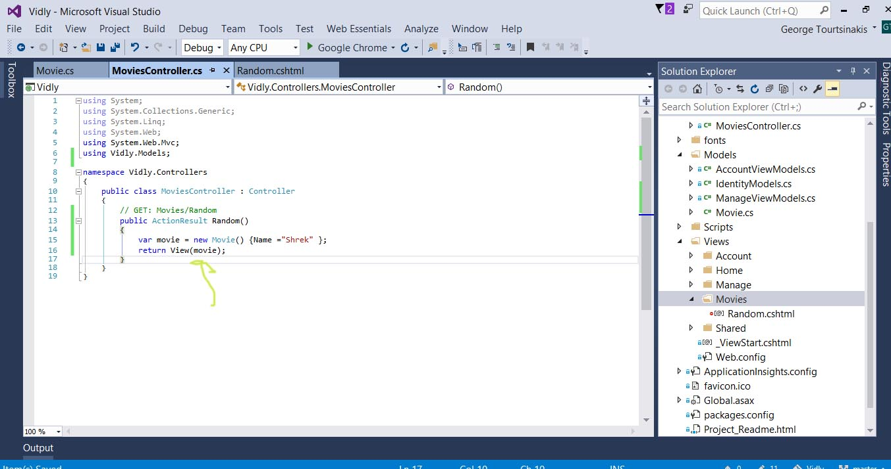
When we want to write C# and have it shown in our View we start with @. Then we write Model. Every View has
this property which give us access to the Model we passed to it and the controller. If we type . at the Model we will see
that the type of this model is dynamic.
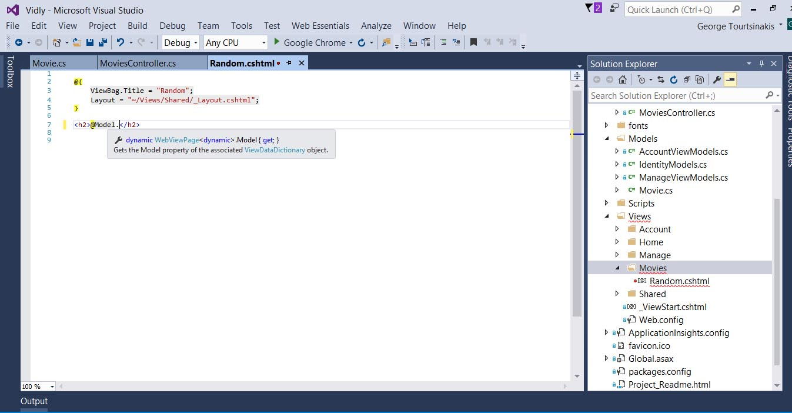
On top of the file we need to use a directive to specify the type of the Model for this View.
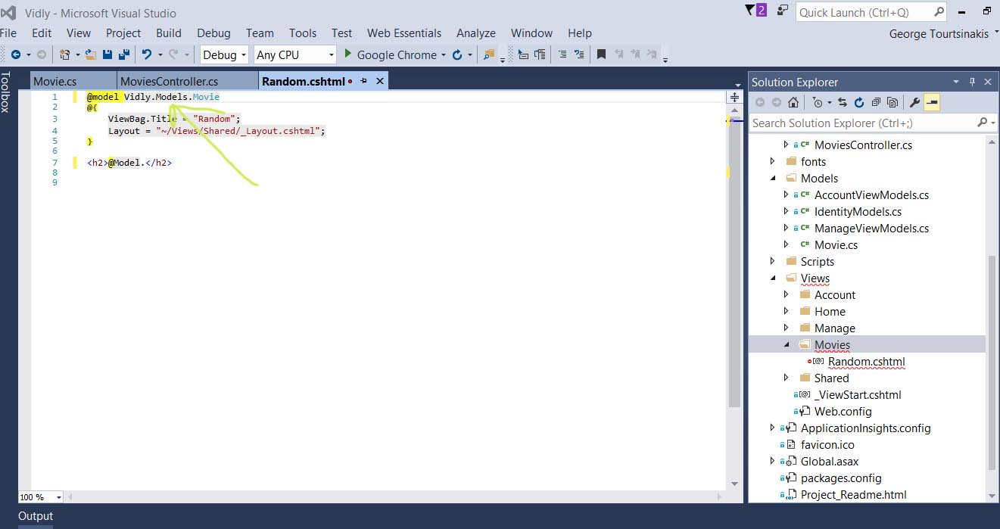
After that we can see that we can access the Name property for Model and we can put it in our html.
ASP.NET MVC Fundamentals
-
Action Results
In our controllers before our methods name we have ActionResult type.
public ActionResult Random()
{
var movie = new Movie() {Name ="Shrek" };
return View(movie);
}
ActionResult is the base class of all action resolves in ASP.NET MVC. Depending on what an action does it would return an instance of one the class that derives from.
-
return View() in ActionResult
This method allows us to quickly create a view result and derives from Controller class. Another way is :
return new ViewResult();
-
ViewResult
We can set the type to ViewResult instead of ActionResult. This is good for unit testing. Sometimes in an action we may have different execution paths and return different action results.
-
PartialViewResult
Return a PartialView().
-
ContentResult
Return simple text Content().
public ActionResult Random()
{
return Content("Hello World");
}
-
RedirectResult
Redirect user to url Redirect().
-
RedirectToRouteResult
RedirectToAction() instead of url. First the name of the action and then the name of the controller.
public ActionResult Random()
{
return RedirectToAction("Index","Home");
}
If we want to have new query strings we will have to pass a third argument.
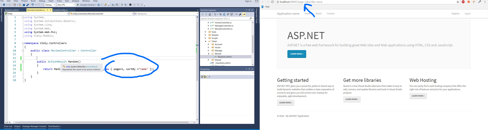
-
JsonResult
Return a serialized object file Json().
-
FileResult
Return a file File().
-
HttpNotFoundResult
Return a not found error HttpNotFound().
public ActionResult Random()
{
return HttpNotFound();
}
-
EmptyResult
Return something empty like void.
public ActionResult Random()
{
return new EmptyResult();
}
-
Action parameters
The input for our actions. The parameter resources :
In the URL : /movies/edit/1 (if the paramater is not named id but something else since in our default we must have it as id we will get an error)
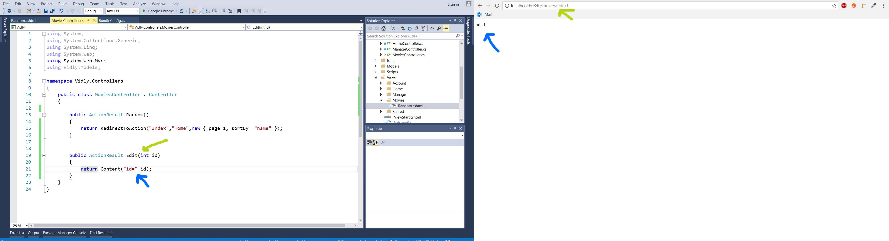
In the query string : /movies/edit?id=2
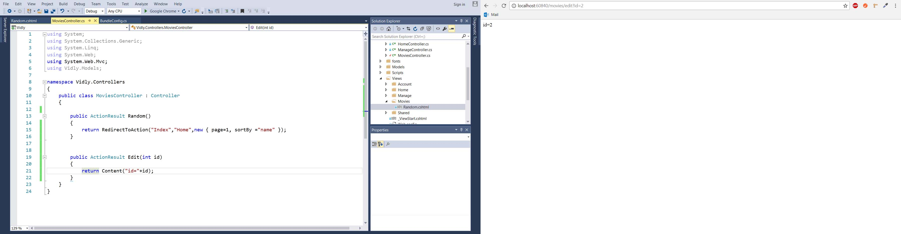
- In the form data : id=1
Optional parameter
public ActionResult Index(int? pageIndex,string sortBy)
{
if (!pageIndex.HasValue)
{
pageIndex = 1;
}
if (String.IsNullOrWhiteSpace(sortBy))
{
sortBy = "Name";
}
return Content(String.Format("pageIndex={0}&sortBy={1}", pageIndex, sortBy));
}
If we don't have the parameter we will get an error.
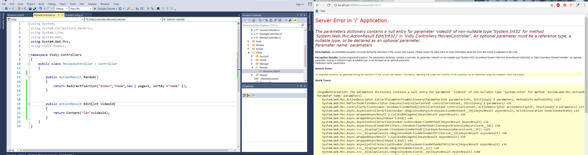
-
Convention-based Routing(custom Routing)
We might need in our application more parameters than id like : /movies/released/2015/04. You have
to define the Routes from the more specific to the most generic otherwise the more generic will be applied to the url.
The most common overload method is the one with three parameters(name,URL, defaults) and the name must be unique.
routes.MapRoute(
"MoviesByReleaseDate",
"movies/released/{year/{month}}",
new {controller = "Movies",action="ByReleaseDate"});
Next we create the action(if we type mvcaction4 and tab we can create it fast). If the url doesn't matches the RouteConfig patterns we will get an error.
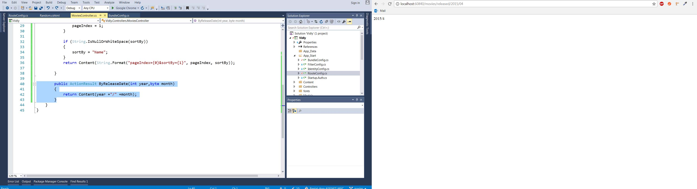
Regular Expression(if the url doesn't matches the expression we will get an error)
routes.MapRoute(
"MoviesByReleaseDate",
"movies/released/{year}/{month}",
new{controller = "Movies",action="ByReleaseDate"},
new {year = @"\d{4}", month = @"\d{2}"}
);
If we want to limit the route parameters:
routes.MapRoute(
"MoviesByReleaseDate",
"movies/released/{year}/{month}",
new{controller = "Movies",action="ByReleaseDate"},
new {year = @"2015||2016}", month = @"\d{2}"}
);
Attribute Routing
This is a cleaner way of creating custom routes so we can avoid making RouteConfig a mess and avoiding errors if we rename the action.
First we enable it:
routes.MapMvcAttributeRoutes();
And the way of not polluting our RouteConfig :
[Route("movies/released/{year}/{month:regex(\\d{2})}")]
public ActionResult ByReleaseDate(int year,byte month)
{
return Content(year +"/" +month);
}
Constraints
- range
- min
- max
- minlength
- maxlength
- int
- float
- guid
Passing Data to Views
We have two extra ways to return a view instead of only passing the parameter to View method.
ViewData
At our controller :
public ActionResult Random()
{
var movie = new Movie() { Name = "Shrek" };
ViewData["Movie"] = movie;
return View();
}
And at our Model we need to cast the ViewData with the type(this approach is ugly and shouldn't be used).
@using Vidly.Models
@model Vidly.Models.Movie
@{
ViewBag.Title = "Random";
Layout = "~/Views/Shared/_Layout.cshtml";
}
<h2>@( ((Movie)ViewData["Movie"]).Name)</h2>
-
Microsoft tried to fix it with ViewBag that instead of magic string it has a magic property.
public ActionResult Random()
{
var movie = new Movie() { Name = "Shrek" };
ViewBag.Movie = movie;
return View();
}
And at our View(if we decide to change it we should remember to change it at View also):
@using Vidly.Models
@model Vidly.Models.Movie
@{
ViewBag.Title = "Random";
Layout = "~/Views/Shared/_Layout.cshtml";
}
<h2>@ViewBag.Movie</h2>
We should not use ViewData or ViewBag.
View Model
A view model is a model specifically built for a view. It includes any data and rules specific to that view. For example if we
we didn't have the relation tou our model but we needed to show them in a view.
First we create a folder that will have our View Models. Then a class that will have the objects we want to relate.
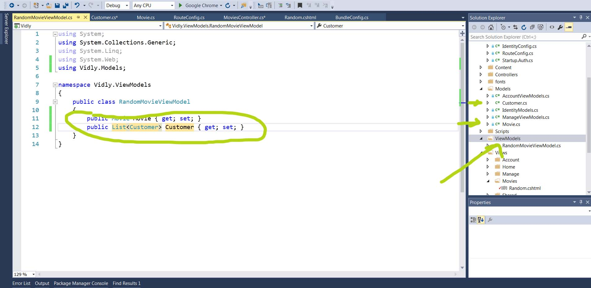
Then at our controller a viewModel :
public ActionResult Random()
{
var movie = new Movie() { Name = "Shrek" };
var customers = new List<Customer>
{
new Customer() {Name = "Customer1" },
new Customer() {Name = "Customer2" }
};
var viewModel = new RandomMovieViewModel
{
Movie = movie,
Customers = customers
};
return View(viewModel);
}
And at our Model :
@model Vidly.ViewModels.RandomMovieViewModel
@{
ViewBag.Title = "Random";
Layout = "~/Views/Shared/_Layout.cshtml";
}
<h2>@Model.Movie.Name</h2>
Razor Syntax - Razor Views
We have seen that we simply add an @ symbol to write C# code in our View. We can alos write a foreach loop
to show all data we want in our List. In the foreach block we can continue to write c# or we can write HTML.
@model Vidly.ViewModels.RandomMovieViewModel
@{
ViewBag.Title = "Random";
Layout = "~/Views/Shared/_Layout.cshtml";
}
<h2>@Model.Movie.Name</h2>
<ul>
@foreach (var customer in Model.Customers)
{
<li>@customer.Name</li>
}
</ul>
We can also write anything we want like ifs etc.
@model Vidly.ViewModels.RandomMovieViewModel
@{
ViewBag.Title = "Random";
Layout = "~/Views/Shared/_Layout.cshtml";
}
<h2>@Model.Movie.Name</h2>
@if (Model.Customers.Count == 0)
{
<p>No one has rented this movei before.</p>
}
Using if and else :
@model Vidly.ViewModels.RandomMovieViewModel
@{
ViewBag.Title = "Random";
Layout = "~/Views/Shared/_Layout.cshtml";
}
<h2>@Model.Movie.Name</h2>
@if (Model.Customers.Count == 0)
{
<p>No one has rented this movei before.</p>
}
else
{
<ul>
@foreach (var customer in Model.Customers)
{
<li>@customer.Name</li>
}
</ul>
}
Remember that type you pass in View of action result must be same in View:
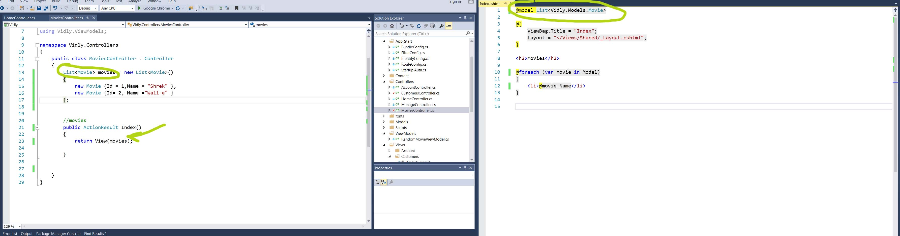
Rendering something dynamically :
@{
var className = Model.Customers.Count > 5 ? "popular" : null;
}
<h2 class="@className">@Model.Movie.Name</h2>
And to comment with razor syntax
@*
This is a comment
*@
-
Partial Views
It's something that you can use it in different smaller areas like widgets etc or the navbar can be be in a partial view.
To create a partial view right click in views then add View. By convention we use an underscore for a partial view.
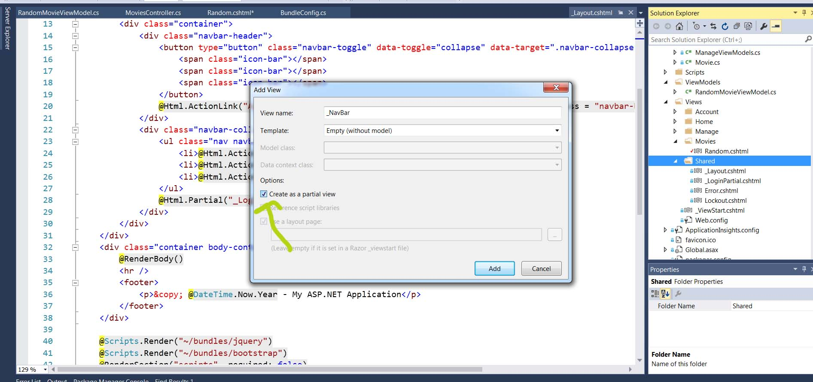
Then to render it where we want we call the Html property of our Views.
<body>
@Html.Partial("_NavBar")
ActionLink()
ActionLink is used to define links for example in our navbar and has 9 overloads. In the below code we have
name of link, actionName, controllerName .
<li>@Html.ActionLink("Home", "Index", "Home")</li>
Url.Action()
It provides only the Url potion and not the whole href like ActionLink().
<ul>
@foreach (var customer in Model.Customers)
{
<li><a href="@Url.Action("Details")/@customer.Id">@customer.Name</a></li>
}
</ul>
Starting with database
First in our package manager console we enable migrations.
Second we create our first migration with add-migration and name of migration.
Third we must create our tables in ApplicationContext as Dbset. Those changes are done in IdentityModel.
public class ApplicationDbContext : IdentityDbContext
{
public DbSet Customers { get; set; }
public ApplicationDbContext()
: base("DefaultConnection", throwIfV1Schema: false)
{
}
public static ApplicationDbContext Create()
{
return new ApplicationDbContext();
}
}
Forth we must generate our database by running the command update-database. We will have an mdf file created in our App-data :
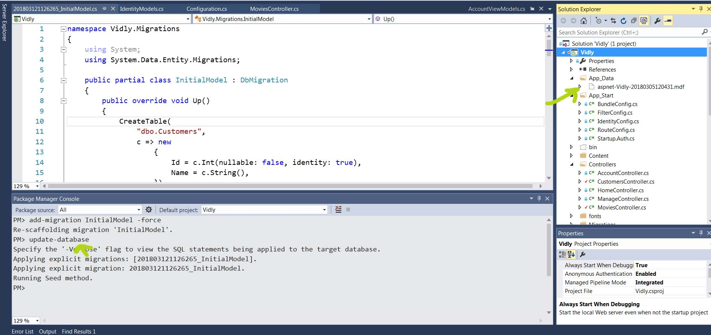
Seeding the database
To seed the database you run an empty migration which will create an Up and Down method.
Then in Up method you will use the SQL method to query the database and give data.
After writing the query you type update-database in our package manager console.
Overriding Conventions
Data Annotations
If you want to change some column's properties you must use System.ComponentModel.DataAnnotations.
Then you put in squared brackets the change you want :
using System;
using System.Collections.Generic;
using System.ComponentModel.DataAnnotations;
using System.Linq;
using System.Web;
namespace Vidly.Models
{
public class Customer
{
public int Id { get; set; }
[Required]
public string Name { get; set; }
public bool IsSubcribed { get; set; }
public MembershipType MembershipType { get; set; }
public byte MembershipTypeId { get; set; }
}
}
Also we can use Fluent API as in the html file in here :
https://github.com/georgetour/Entity-Framework/blob/master/Chapter%205%20Overriding%20Conventions/README.html
Querying Objects
To query the database with Entity framework first we create an ApplicationDbContext and initialize it in
the constructor since it's a disposable object we must dispose it :
The Controller :
using System;
using System.Collections.Generic;
using System.Linq;
using System.Web;
using System.Web.Mvc;
using Vidly.Models;
using Vidly.ViewModels;
namespace Vidly.Controllers
{
public class CustomersController : Controller
{
private ApplicationDbContext _context;
public CustomersController()
{
_context = new ApplicationDbContext();
}
protected override void Dispose(bool disposing)
{
_context.Dispose();
}
// GET: Customers
public ActionResult Index()
{
var customers = _context.Customers.ToList();
return View(customers);
}
//Details for one customer
public ActionResult Details(int id)
{
var customerDetails = _context.Customers.SingleOrDefault(c => c.Id== id);
if (customerDetails == null)
return HttpNotFound();
return View(customerDetails);
}
}
}
The View
@model IEnumerable<Vidly.Models.Customer>
@{
ViewBag.Title = "Customers";
Layout = "~/Views/Shared/_Layout.cshtml";
}
<h2>Customers
@if (!Model.Any())
{
<p>Customer list is empty >/p>
} else {
<ul>
@foreach (var customer in Model)
{
<li><a href="@Url.Action("Details")/@customer.Id">@customer.Name</a></li>
}
</ul>
}
Eager Loading
If we try to load anything related objects we will get an error since Entity Framework loads only the main object.
So we have to load them all together and then show them in View by using Include method and System.Data.Entity :
using System;
using System.Collections.Generic;
using System.Data.Entity;
using System.Linq;
using System.Web;
using System.Web.Mvc;
using Vidly.Models;
using Vidly.ViewModels;
namespace Vidly.Controllers
{
public class CustomersController : Controller
{
private ApplicationDbContext _context;
public CustomersController()
{
_context = new ApplicationDbContext();
}
protected override void Dispose(bool disposing)
{
_context.Dispose();
}
// GET: Customers
public ActionResult Index()
{
var customers = _context.Customers.Include(c => c.MembershipType).ToList();
return View(customers);
}
//Details for one customer
public ActionResult Details(int id)
{
var customerDetails = _context.Customers.SingleOrDefault(c => c.Id== id);
if (customerDetails == null)
return HttpNotFound();
return View(customerDetails);
}
}
}
Forms
To have a form first we need an Action that we will show the form in View(if you type mvcaction4 tab tab you will see a new Action easily created in Visual Studio).
After we have created the action in our View for the form :
-
With Html.BeginForm we pass the action this form will target when is submitted and the Controller. We have to write using at the begin so the form will be closed :
@using (Html.BeginForm("Create", "Customers"))
{
}
-
Inside the form we can use raw html or the methods we have in @Html(by using the methods we get automatically validation according to Model). According to what we have in our Model the form will have the
the fields accordingly :
public class Customer
{
public int Id { get; set; }
[Required]
[StringLength(255)]
public string Name { get; set; }
public bool IsSubcribed { get; set; }
public MembershipType MembershipType { get; set; }
public byte MembershipTypeId { get; set; }
public DateTime? Birthdate { get; set; }
}
}
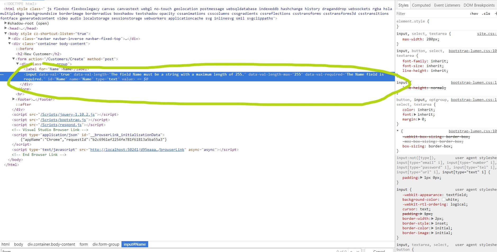
@model Vidly.Models.Customer
@{
ViewBag.Title = "NewCustomer";
Layout = "~/Views/Shared/_Layout.cshtml";
}
<h2>New Customer</h2>
@using (Html.BeginForm("Create", "Customers"))
{
<div class="form-group">
@Html.LabelFor(m => m.Name)
@Html.TextBoxFor(m => m.Name)
</div>
}
Add extras to form field (classes etc) :
To do this we hust add the new keyword and type what we want :
@using (Html.BeginForm("Create", "Customers"))
{
<div class="form-group">
@Html.LabelFor(m => m.Name)
@Html.TextBoxFor(m => m.Name, new { @class ="form-control" })
</div>
}
Though if we have a check box we have to layout differently :
<div class="checkbox">
<label>
@Html.CheckBoxFor(m => m.IsSubcribed, new { @type = "checkbox" })Subscribed to Newsletter
</label>
</div>
-
Changing display name of a label for a field :
With the above code we get the name for the label dynamically according to its Model. If we want to change
it we have two options :
namespace Vidly.Models
{
public class Customer
{
public int Id { get; set; }
[Required]
[StringLength(255)]
public string Name { get; set; }
public bool IsSubcribed { get; set; }
public MembershipType MembershipType { get; set; }
public byte MembershipTypeId { get; set; }
[Display(Name = "Date of Birth")]
public DateTime? Birthdate { get; set; }
}
}
Second option pure html:
<div class="form-group">
<label for="Birthdate">Date of Birthday</label>
@Html.TextBoxFor(m => m.Birthdate, new { @class = "form-control" })
</div>
-
DropDown lists
First we need bring in our action what we want to show in our dropdown list:
public ActionResult NewCustomer()
{
var membershipTypes = _context.MembershipTypes.ToList();
var viewModel = new NewCustomerViewModel
{
MembershipTypes = membershipTypes
};
return View(viewModel);
}
We also need to create a ViewModel that will have the IEnumerable for the dropdown list.
public class CustomerFormViewModel
{
//list of membership types
public IEnumerable MembershipTypes { get; set; }
public Customer Customer { get; set; }
}
At our View :
<div class="form-group">
@Html.LabelFor(m => m.Customer.MembershipTypeId)
@Html.DropDownListFor(m => m.Customer.MembershipTypeId,
new SelectList(Model.MembershipTypes,"Id","Membership"),
"Select membership type",
new { @class = "form-control" })
</div>
First we define for what this dropdown will be in our case for MembershipTypeId. Then we write new SelectList with the arguments
what we will bing from the model the list of items, then the name of the property that holds the value of each item in this case Id,
next argument the property for the text of each item which is Membership. After a string for the title of the list "Select membership type" and finally if we want something like classes etc.
-
Model Binding
When our form is ready we finally need a button and the action we had in Html.BeginForm with the HttpPost attribute above.
[HttpPost]
public ActionResult Create(NewCustomerViewModel viewModel)
{
return View();
}
MVC is smart enough to bind the action with what we passed in ass parameter.
Saving Data
First we use the Add method that temporarily saves our data and for the changes to be applied to database we need
to SaveChanges().
[HttpPost]
public ActionResult Create(Customer customer)
{
_context.Customers.Add(customer);
_context.SaveChanges();
return RedirectToAction("Index","Customers");
}
Finally we redirect them or create a View which will have the same name as the action like thank you it was submitted etc.
-
Edit Form
To edit a form first we need to have an action:
public ActionResult Edit(int id)
{
var customer = _context.Customers.SingleOrDefault(c => c.Id == id);
var viewModel = new CustomerFormViewModel
{
Customer = customer,
MembershipTypes = _context.MembershipTypes.ToList()
};
if (customer == null)
{
return HttpNotFound();
}
return View("CustomerForm",viewModel);
}
We will bring a customer according to id passed. Then we have the ViewModel we have created which will get
the Customer and the mEmbershipTypes directly from context. If we don't have anything for that id return null else return
the View CustomerForm and in it the viewModel.
-
Updating Data
We have two options. Either to use TryUpdateModel() which updates all the data. This is not suggested though for security reasons
and if we have an option to pass arguments only that we want with strings as 3rd argument.
Wrong approach
[HttpPost]
public ActionResult Save(Customer customer)
{
if (customer.Id == 0)
_context.Customers.Add(customer);
else
{
var customerInDB = _context.Customers.Single(c => c.Id == customer.Id);
TryUpdateModel(customerInDB, "", new string[] { "Name", "Email" });
}
_context.SaveChanges();
return RedirectToAction("Index","Customers");
}
Correct approach
[HttpPost]
public ActionResult Save(Customer customer)
{
if (customer.Id == 0)
_context.Customers.Add(customer);
else
{
var customerInDB = _context.Customers.Single(c => c.Id == customer.Id);
customerInDB.Name = customer.Name;
customerInDB.Birthdate = customer.Birthdate;
customerInDB.MembershipTypeId = customer.MembershipTypeId;
customerInDB.IsSubcribed = customer.IsSubcribed;
}
_context.SaveChanges();
return RedirectToAction("Index","Customers");
}
Also we have to have hidden the id: in our form:
@Html.HiddenFor(m => m.Customer.Id)
Which has the id in an input but hidden.
Checking if we have value and change html and validation error
To check if we have an id an change html title for example accordingly we will just add a new property in the ViewModel
public class CustomerFormViewModel
{
//list of membership types
public IEnumerable MembershipTypes { get; set; }
public Customer Customer { get; set; }
public string Title
{
get
{
if (Customer != null && Customer.Id !=0)
{
return "Edit Customer";
}
else
{
return "New Customer";
}
}
Then we will bring in our View the title.
@Html.Model.Title
Validation errors
Sometimes we will see an error and we will not get info about what it is. To solve this we must use try and catch.
try
{
_context.SaveChanges();
}
catch (DbEntityValidationException e)
{
Console.WriteLine(e);
}
Validation
ASP.NET MVC uses data annotations to validate data according to parameter we have and checks if the data we pass
is valid else gives as an error.
We can use ModelState.IsValid to check if the data we pass is valid according to the Model.
To add validation we hve three steps:
- Data annotation in our entities
[Required]
[StringLength(255)]
public string Name { get; set; }
- Use ModelState.IsValid
[HttpPost]
public ActionResult Save(Customer customer)
{
if (!ModelState.IsValid)
{
var viewModel = new CustomerFormViewModel
{
Customer = customer,
MembershipTypes = _context.MembershipTypes.ToList()
};
return View("CustomerForm",viewModel);
}
- Error message to user (we add a field in our view that will show the message)
@Html.LabelFor(m => m.Customer.Name)
@Html.TextBoxFor(m => m.Customer.Name, new { @class ="form-control" })
@Html.ValidationMessageFor(m => m.Customer.Name)
Styling validation errors and field
We can see the classes used by ASP.NET MVC in developer tools and made the CSS we want.
The membership type though it s not required since it s a byte it's implicit required.
Data annotations
- [Required]
- [StringLength(255)]
- [Range(1,10)] for numbers
- [Compare("OtherProperry")] for comparing two properties for example passwords
- [Phone]
- [EmailAddress]
- [Url]
- [RegularExpression("...")]
Overriding error message
We can override error messages :
[Required(ErrorMessage = "Must not be empty")]
[StringLength(255)]
public string Name { get; set; }
Custom Validation
Let's suppose the customer who fills the form must be over 18 years
First we create class out our Model which will derive from ValidationAttribute which is defined in System.ComponentModel.DataAnnotations
Then we override the IsValid method.
public class Min18YearsIfMember :ValidationAttribute
{
protected override ValidationResult IsValid(object value, ValidationContext validationContext)
{
return base.IsValid(value, validationContext);
}
}
At our Model we add the property :
[Min18YearsIfMember]
public DateTime? Birthdate { get; set; }
Then at our Model in the class we created and in the IsValid method. The ObjectInstance property gives us access in the containing class and we must cast it with the object we want.
protected override ValidationResult IsValid(object value, ValidationContext validationContext)
{
var customer = (Customer)validationContext.ObjectInstance;
if (customer.MembershipTypeId ==1)
return ValidationResult.Success;
if (customer.Birthdate == null)
return new ValidationResult("Birthdate is required");
var age = DateTime.Today.Year - customer.Birthdate.Value.Year;
return (age >= 18 ? ValidationResult.Success : new ValidationResult("Customer should be at least 18 years old"));
}
Finally our our View form we need to add validation message.
Validation summary
ASP.NET MVC gives us the ability to have the total summary of errors in our form.
@Html.ValidationSummary()
Be careful for extra messages that we will get like Ids etc since they must not be empty. We fix this by instanciating
the object with the fields so it will get 0 value instead of empty.
public ActionResult NewCustomer()
{
var membershipTypes = _context.MembershipTypes.ToList();
var viewModel = new CustomerFormViewModel
{
Customer = new Customer(),
MembershipTypes = membershipTypes
};
return View("CustomerForm",viewModel);
}
We can pass arguments so it display a custom error and exclude all other errors.
@Html.ValidationSummary(true,"Please fix the following errors")
Cient-Side Validation
Client-side validation is by default disabled in APS.NET MVC. To enable it go to BundleConfig.cs and see that we have it at our bundles but we don't have it in our shared View file. To have it where we want we must add it in our Customer form view for example.
@section scripts
{
@Scripts.Render("~/bundles/jqueryval")
}
ASP.NET MVC now has validation errors in client side the messages we had. No extra call to server as we can see in our developer tools and Network activity. This happens because we used data annotations before so ASP.NET MVC handles everything.
Client-side validation only works with data annotations. The custom validation we had for age won't work in client side
so we will use server side for that.
Prevent Cross-Site Request Forgery
We can see in the form data in our Network in developer tools the security hole.
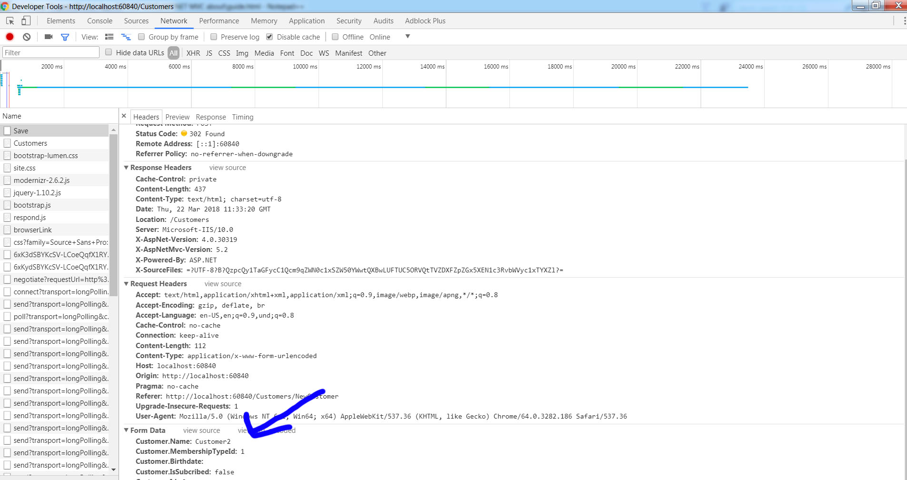
To prevent this firtt we must make sure that this request comes only from the customer form.
- First we use at our form
@Html.AntiForgeryToken()
We can see we have a hidden field created that's for verification which this value is also stored as a cookie in users computer
in encrypted format. If the cookie matches the value then its a legitimate request otherwise it's considered as an attack.
.
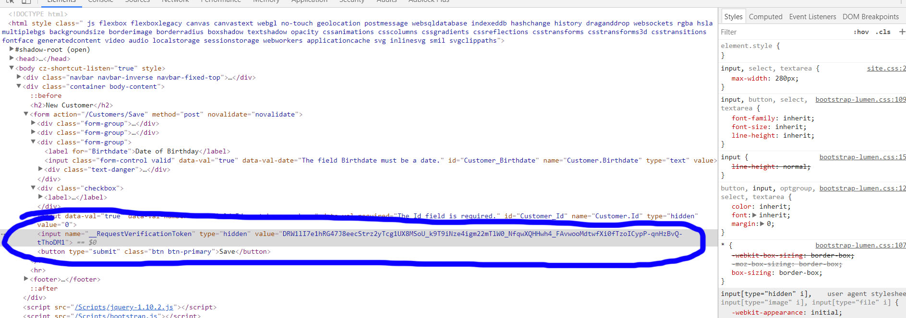
- Second we surround our action that has the HttpPost with the validation AntiForgeryToken.
[HttpPost]
[ValidateAntiForgeryToken]
All validation security will be handled by ASP.NET MVC then.